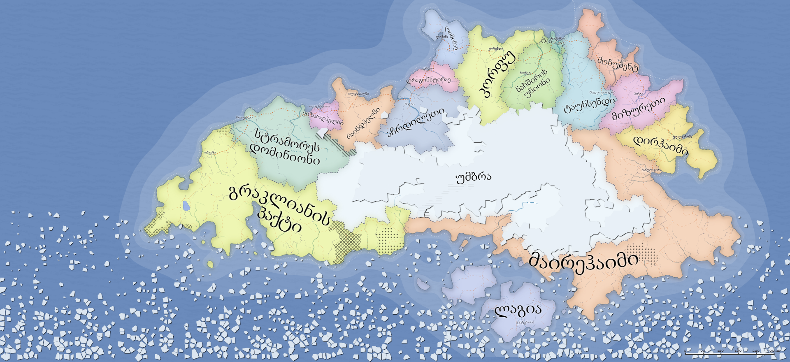
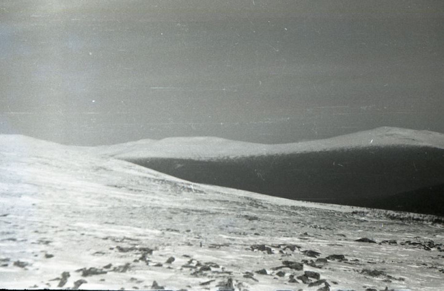
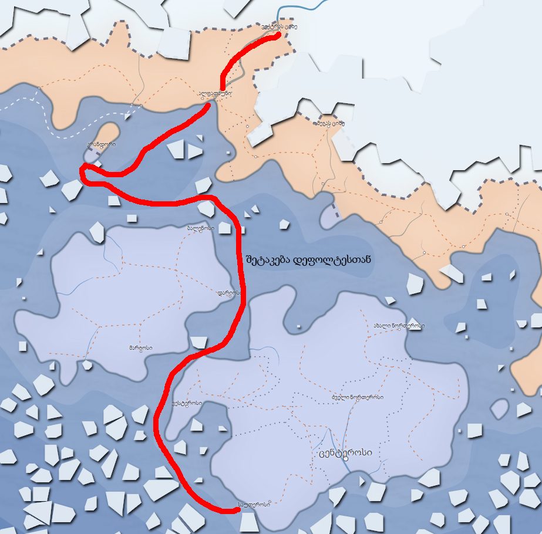
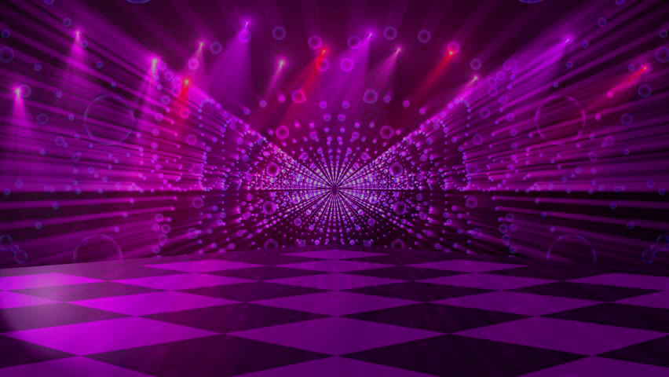
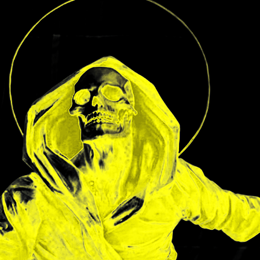
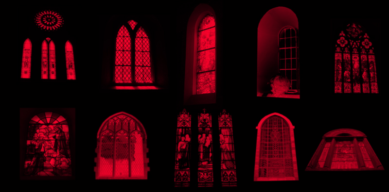
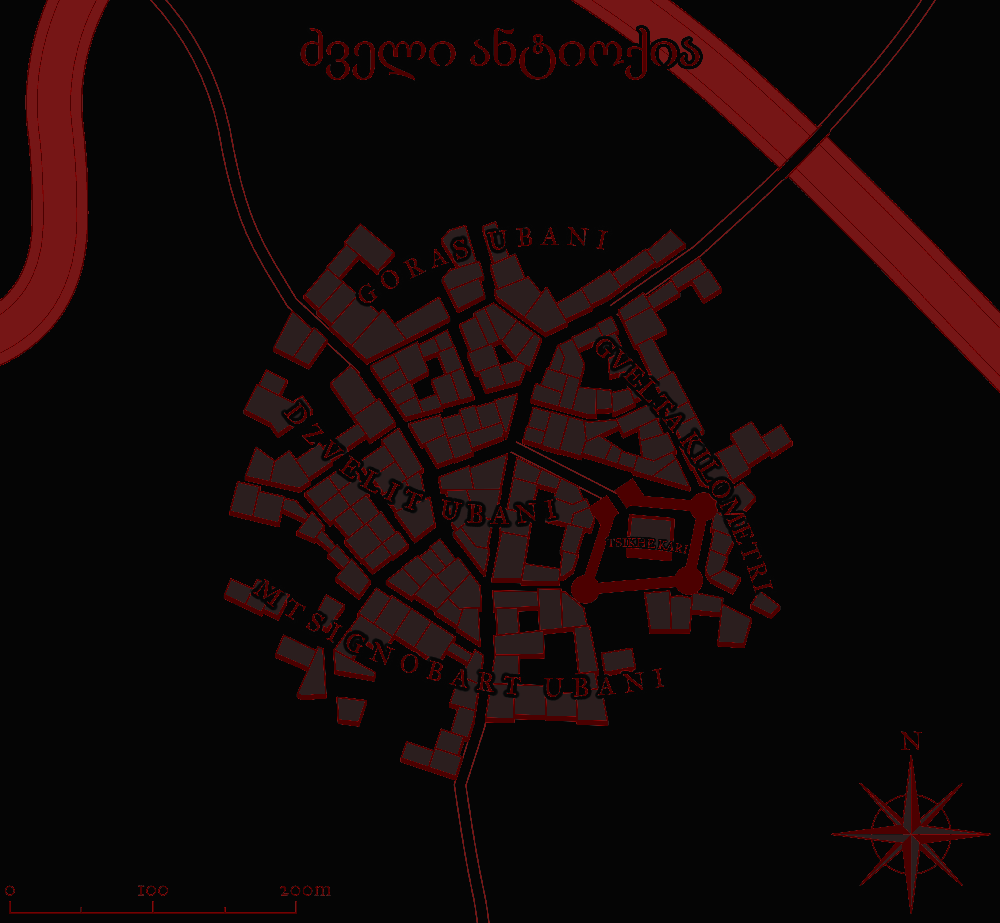

უმბრას წიგნაკი
Table of Contents
ზოგადი მიმოხილვა

| მოთამაშე | პერსონაჟი | კლასი | სტატუსი |
|---|---|---|---|
| გვალია | ქარონი | გრძნეული | 🏃🏻💨 |
| გვალია | ფრეა | ჯადოქარი | |
| ვასილი | ულფგარ | პალადინი | 💀 |
| ვასილი | რურიკ | მოციქული | |
| თენგო | ვორასი | მზირი | |
| სანდრო | გერალდი | ალქაჯოსანი | 💀 |
| სანდრო | ჯადოქარი | ||
| შოთა | ელიოზი | მგოსანი | 💀 |
| შოთა | ჩებურეკი | მოგვი | |
| ჭკადუა | ნორვემირ | ბარბაროსი | |
| ბოხოჩაძე | არჯიტ | მზირი |
დროებითი დეტალები
- აჩრდილეთიდან მოსული დელეგაცია. აბჯარზე მკერდზე თეთრი რვაკუთხედი.
- (ლორე: სტალმორი - ალქემისტი)
სესიების მიმოხილვა
სესია 1 (კვირა, 9 იანვარი, 2022) — ადონის სურვილი I

Figure 2: უმბრა, პირველი ექსპედიციისას
ლაგიის სამეფოს მონარქმა, პლუტარქე ადონმა გადაწყვიტა უმბრაში რიგით მერვე ექსპედიციის წარმართვა, თავდაპირველად მხოლოდ საკუთარი მეოხებით, მაგრამ მისი მაგიური თვალი კრანდორის უზურპატორმა, გიჟმა ალბერტმა „დაითრია“. პლუტარქეს ენერგია იცლება ამ თვალის შენარჩუნებისას და ამიტომ ესაჭიროება თავგადასავლის მაძიებელთა რაზმი, რომ თვალი დაიხსნან და მას უმბრაში გაჰყვნენ, როგორც დამცველები.
სამორინე "მიდასის ხელისკენ" გზაში გერალდის გაქურდვა სცადა ერთ-ერთმა სალახანამ, შედეგად დაიწყო ჩხუბი, რომელსაც შეუერთნენ ულფგარი, ქარონი, ნორვემირი, ელიოზი და, თუნდაც ნების საწინააღმდეგოდ, მაგრამ ვორასიც.
საბოლოო ჯამში, ნაჩხუბარი ჯგუფი მივიდა სამორინეში, სადაც დახვდათ ვინმე ადმინისტრატორი გილბერტი. მალევე სცენაზე გამოვიდა ადონის ილუზიური აჩრდილი და მძლავრი პერფორმანსით ჩამოაყალიბა მისია და ბოლოს ისიც თქვა, რომ ჯილდო არის ას ორმოცდაათი ათასი ოქროს მონეტა.
ნორვემირმა შეიგრძნო სამორინეს სიკეთენი და რაც კი რამე ფული გააჩნდა, წააგო.
გილბერტის თქმით, გემით მგზავრობისას პირველი გაჩერება იქნებოდა კრანდორი, შემდეგ ალფათაუნი, ვექტრას ციხე და ბოლოს - უმბრა. შერჩეული გემის, სახელად "მკვლელი", კაპიტანია ვინმე სისსე, რომელიც თითქოსდა პირატის პაროდიას ასრულებს.
ზღვაში ყოფნისას "მკვლელი" აღმოაჩინა მაირეჰაიმის იმპერიულმა გალეონმა, კაპიტან დეფოლტეს მეთაურობით. გემები ერთმანეთს მიუახლოვდნენ და დეფოლტემ "მკვლელზე" ფეხი შედგა, რათა დაეკითხა პირატები, რასაც სიტყვიერი შელაპარაკება მოჰყვა. ვითარება დაიძაბა, დეფოლტე ყელში ეცა ნორვემირს და მისი განზე გადაგდება მოინდომა. ამით დაიწყო საზღვაო ბრძოლა ორ გემს შორის საზარბაზნე ბადროების გაცვლით. ქარონმა "მკვლელის" სარდაფს თავი უმალვე შეაფარა და შავი კუპრის გამოყენებით ნაპრალები შეაკეთა. საბოლოო ჯამში, სანამ დეფოლტე ელიოზს საბოლოო დარტყმით აკუწავდა, ნორვემირმა იგი ხელთ აიტაცა და ზღვაში მოისროლა. იმპერიულმა გემმა ამის შემდეგ უკან დაიხია.
ექსპედიტორებმა და სისსემ ღუზა კრანდორის მილეწილ პორტში ჩააგდეს, სადაც ყველაფერი, რაც კი შეიძლება ცოცხალი იყოს, მკდარია. ქარონმა, როგორც კი ამის საშუალება მიეცა, მინრას აკადემიაში წერილი გააგზავნა, ვინაიდან მისი ექსპედიტორად წასვლა არ იყო გეგმის ნაწილი. გილბერტის ინფორმაციით, გიჟი ალბერტი ელის მუსიკოსთა ჯგუფს სახელად "უმბრა მალუმ", და მათი როლის შესრულება ექსპედიტორებს ევალებათ.

სესია 2 (კვირა, 23 იანვარი, 2022) — ადონის სურვილი II

Figure 4: გიჟი ალბერტის სასახლის დარბაზი მუსიკალური ნომრის დროს.
გიჟი ალბერტის სასახლეში ელიოსის არაჩვეულებრივი პერფორმანსი გაიმართა. მან მოხიბლა მერაბი თავისი ოსტატური დაკვრით. ეს დიდი ხანი არ გაგრძელდა, რადგან ნორვემირმა დაიწყო არითმული ტაშის დაკვრა, რამაც ალბერტი ძალზედ გააღიზიანა. მან გააჩერა პერფორმანსი და მოითხოვა მუსიკის რითმის დამრღვევის გამოცხადება. ელიოსმა დაარწმუნა ალბერტი, რომ რითმის დამრღვევი მისი ერთერთი უსულო აბჯრის დასაკიდი იყო, რაც გიჟმა ალბერტმა დაიჯერა და დაიწყო მისი ლანძღვა-გინება.
ნორვემირმა დაამწყვდია გიჟი ალბერტი თავის ხელებში. მისი განთავისუფლების ყოველი მცდელობა წარუმატებელი დარჩა. ულფგარი ავიდა ალბერტის ტახტზე, მაგრამ მალევე მოუწია ჩამოხტომა, რადგან გერალდმა მის ზევით არსებული ბალკონის სვეტი დაანგრია. ოთახს გველები დაესხნენ. ულფგარი და ელიოსი გველების შეტევისგან დაეცენ. გერალდი ტახტის მხარეს გაჩენილი ყინულის კედლის იქეთ აღმოჩნდა, რომელიც აშორებდა ბრძოლას. ქარონმა მაგიური ძალით ულფგარის და ელიოსის გარშემო მყოფი გველები დააძინა და უეცრად მის ხელებს ცეცხლი წაეკიდა (რომელიც მასზე არ მოქმედებდა). გერალდმა გაათავისუფლა არკ-მაგუს ადონის თვალი ტახტის მიმდებარე კედლიდან (ეს იყო რის საპოვნელადაც იყვნენ მოგზაურები მოსული).
ნორვემირმა კვლავ დატყვევებულ გიჟ ალბერტს თავი ნავთში ჩააყოფინა, ქარონმა თავისი ცეცხლმოკიდებული ხელით თმებზე ცეცხლი წაუკიდა, ულფგარმა გულში შუბი შეასო და ელიოსმა თავისი მოწამლული ხანჟალი თვალში გლიჯა… ნორვემირმა ალბერტის მკვდარი სული ხელიდან გაუშვა, მაგრამ ალბერტის სული წამიერად დაბრუნდა საბოლოო სვლის გასაკეთებლად. მისი ბოლო სვლა იყო ნორვემირის კუბოში მყოფი არსების გაცოცხლება, რის შედეგადაც ნორვემირის კუბოს ახალი ფრაზა დაემატა, ალბერტი კი ფერფლად იქცა…
ულფგარმა ბრძოლის შემდეგ ცეცხლსაწინააღმდეგო ფარი და ალბერტის შელოცვების წიგნი იპოვა, საიდანაც ისწავლა "Electrified Terrain (proprietary)" შელოცვა. ელიოზს წილად ხვდა „თაგვის წამალი“, რომელიც ნებისმიერ ცოცხალ არსებას უმალვე კლავდა. ქარონს შეხვდა უცნაური ნიღაბი.
ჩვენ ხელში დარჩა ეტლი (ცხენის გარეშე)
სესია 3 (კვირა, 30 იანვარი 2022) — დიადი ქვაბულისკენ

Figure 5: აჩრდილელი დელეგაციის საწევრო აბჯრის ასლი.
მოშორებით, კუნძულ კანდორის სანაპიროზე, გამოჩნდა გემი „მკვლელი“. სისსე თურმე ყველას ელოდებოდა. გემზე იმყოფებოდა ვორასი, რომელიც გიჟი ალბერტის ბრძოლას არ დაესწრო. ფეხი შედგა თუ არა ყველამ, სისსემ ქარონს წერილი გადასცა, მან კი ყველასგან მოშორებულ ადგილას შეაფარა თავი, თვალი გადაავლო ნაწერს და აღელვებული დაბრუნდა. ამის მერე სისსემ გამართა მონოლოგი, სადაც ახსნა რომ იგი იყო პირატთა ლიგის მე-14 ნაოსანი. განმარტა, რომ მე-14 არა წარმომავლობით, არამედ რანკით. გაფრთხილებითა თუ მუქარით, ყველას აუწყა, ტყუილად არ დამნიშნეს თქვენს კაპიტნადო და, პირდაპირი მნიშვნელობით, წითელი კლანჭები აჩვენა.
„მკველმა“ გეზი აიღო ალფათაუნისკენ. პლუტარქეს თქმით, იქაურობა არ ემორჩილებოდა იმპერიას და, შესაბამისად, შესვლა ადვილი იყო. პორტში დარაჯად იდგა ერთი რკინის აბჯრიანი კაცი, რომელმაც ყველას პასპორტები მოთხოვა. გამოლაპარაკება სცადეს, მაგრამ აშკარა იყო, რომ მას მხოლოდ სიტყვა „პასპორტი“ ესმოდა. სისსემ რაღაცა ჩაჩურჩულა და ყველა გაუშვა.
ალფათაუნი აღმოჩნდა მეამბოხეთა დიდი ცენტრი. ქალაქში ყველამ იცოდა გმირების შესახებ, მით უმეტეს რომ მათი სახეები გამოკრული იყო ქალაქის ცენტრში მდგარ ძებნილთა სიაზე. გარშემო ბევრი წითელი იყო.
პლუტარქემ განაცხადა, ამ ექსპედიციისთვის განსაკუთრებული ხალხი გვჭირდებაო და უბრძანა ცენტრალური ტავერნისკენ დაძრულიყვნენ. შენობა ერთი შეხედვით ჩვეულებრივი იყო, მაგრამ კარი ჰქონდა ∇-ს ფორმის. ტავერნაში შესვლისას გამოვიდა კაცი სახელად შტანგა მაიკი, რომელიც 45 ოქროს დაპირდა მას, ვინც ხელს გადაუწევდა. მის გარდა, იქ შესულებს შეხვდათ ამ ტავერნის მეპატრონე არჯიტი, რომელიც სწორედ ის „განსაკუთრებული უნარების მქონე პიროვნება“ აღმოჩნდა. ყველამ კარგი დრო ატარა. ვორასმა ხელის გადაწევის საოცარი უნარი გამოავლინა, რამაც მაიკი მცირედით დააეჭვა, მაგრამ დიდად ყურადღება არ მიუქცევია. ელიოზმა თავისი ახლად ნაპოვნი შხამის გამოყენება გადაწყვიტა: ღვინოში ჩაასხა და საუბარი გაუბა ერთ-ერთ იქ მყოფს. სხვები მალევე მივარდნენ და მოწამლული ჭიქა ხელიდან გამოგლიჯეს.
ლხენისა და დროსტარების შემდეგ, არჯიტმა ყველა თავისკენ მიიწვია. წიგნის თაროს უკან საიდუმლო კარით სარდაფში ჩაიყვანა, რომელიც ამავე დროს მისი საამქროც იყო. ყველამ დაიწყო უმბრასკენ სვლაზე ლაპარაკი, მაგრამ უცბად შემოიჭრა ადამიანი, რომელიც თავიდან ფეხებამდე შავით იყო მოსილი. ნორვემირთან მივიდა და რაღაცაზე გაუწყრა. აშკარა იყო, რომ იგი ნორვემირის გულისთვის იყო მოსული, მაგრამ თვითონ ბარბაროსი ამაზე არ იყო თანახმა. გამოლაპარაკების შემდეგ, მამაკაცი მიუტრიალდა დანარჩენ ხალხს და კითხა, რამე ხომ არ გინდათო. ყველამ იყიდა სხვადასხვა გამოსადეგი ნივთი მომავალი ექსპედიციისთვის. ამის მერე, ადონმა და არჯიტმა ყველას აუხსნეს სიტუაცია:
- უმბრა არის ნეიტრალური, დაუსახლებელი ტერიტორია;
- უმბრა მდებარეობს ქვაბულში;
- უმბრას შემომსაზღვრელი "დიადი ქვაბული" მხოლოდ ორგანაა გახვრეტილი — ომეგას ციხესა და ვექტრას ციხეში;
- დადის ხმები, რომ გველ-მაქციის დაავადება უმბრადან გამომდინარეობს;
- ერთ-ერთი ორგანიზაცია — უბისას ორდენი — რამდენიმე საათში შეუტევს ომეგას ციხეს, რათა სამუდამოდ აღკვეთოს ომეგასა და ვექტრას გვირაბების გამოყენება;
საუბრის შემდეგ, ყველა კანდორზე ნაშოვნი ეტლით ჩრდილოეთისკენ გაემართა. შემოღამებისას გზიდან მოესმათ აბჯრის ჩხრიალის ხმა. ამის მერე დაინახეს გზაზე მდგომი მეომარი, რომელსაც ნაცნობი აბჯარი ეცვა. მიუახლოვდნენ რა, იგი გაეცნო მათ, როგორც „00“. აბჯარზე აჩრდილეთის ემბლემა, თეთრი რვაკუთხედი, ჰქონდა დატანილი. ყველა გააფრთხილა, რომ უმბრასკენ ახლა დიდი ძალები მიიწევენ.
ცოტა ხნის მერე კარეტას გზაში შემოხვდა მაირენჰაიმის იმპერიის ექვსი დარაჯი. მათ ერთი შეხედვით ალყა შემოარტყეს კარეტას რომ დაპატიმრების ბრძანება გამოეცხადებინათ, მაგრამ მალევე გაუჩინარდნენ. დაბნეულმა გმირებმა წინ ნაბიჯი გადადგეს თუ არა, მიხვდნენ, რომ დარაჯები უბრალოდ უჩინრად ქცეულან. ბრძოლისთვის მოუმზადებლებს მოუწიათ უზარმაზარი დარტყმის მიღება: უხილავი მაგიკოსები კარეტის გარშემო შემოიკრიბნენ და გაახურეს, თითქოს შიგნიდან უნდა ამოეწვათ ყველა იქ მჯდომი. ამასთან ერთად, მეომრები კარეტის ფანჯრებს გარეთ დადგნენ რომ იქიდან გადმომხტარისთვის პირდაპირ ეძგირათ ხმალი. მძიმე ბრძოლა გაიმართა. ელიოზი, ულფგარი და არჯიტი კინაღამ იმქვეყნად წაბრძანდნენ.
საბოლოოდ ეს შეხლა-შემოხლა გმირებისთვის გამარჯვების მომტანი აღმოჩნდა. ერთ-ერთი დარაჯი ცოცხალი დატოვეს და „სიმართლის ზონის“ საშუალებით გამოკითხეს ყველაფერი, რაც იცოდა. მის მიერ მოწოდებული ინფორმაცია დიდწილად დაემთხვა ადრე გაგონილს, მაგრამ იყო ერთი სიახლე: თურმე უბისას ორდენს ხელთ ჰქონდა ე.წ ეტიენი ანუ ტიტანი, რომლის გამოყენებას ომეგას ციხის აღებისთვის აპირებდა.
სესია 4 (კვირა, 27 თებერვალი, 2022) — სექტორი A

Figure 6: უსახო მრჩეველი ფაბიო
ექსპედიტორებმა ოვერტონ დარბი დაამარცხეს და შორიახლოს ბანაკი გაშალეს. ნორვემირმა საკუთარი თვალით იხილა, თუ როგორ წავიდნენ ვორასი და ქარონი ტყის მიმართულებით, მაგრამ გადაწყვიტა, ისინი არ შეეჩერებინა.
ვექტრასკენ გზაში ელიოზმა გაიხსენა, რომ დიად ქვაბულში არამხოლოდ ვექტრას და ომეგას გვირაბებია გაყვანილი, არამედ არსებობს კიდევ ერთი, ახალი გვირაბი ნახშირის უნიონის ტერიტორიაზე. ამბობენ, რომ დაახლოებით 2 თვის წინ ნახშირის უნიონის ცენტრალური კომიტეტის მდივანმა, ულფრიდ კოლბერგმა მოიწვია გამორჩეულ მაღაროელთა რაზმი და მათ დაავალა დიად ქვაბულთან ახლოს მდებარე მაღაროში ახლებური წარმოშობის "გრანიტის" მოპოვება. ამ რაზმმა, სახელად ლ.ე.დ.ა. (ლითონთა ექსკავაციის დორფული ასოციაცია), გეგმას არასანქცირებულად გადაუხვია და დიად ქვაბულში მესამე გვირაბი გაიყვანა, შემდეგ უმბრას ტერიტორიაში გაიფანტა.
ელიოზმა ასევე გაიხსენა, რომ მიწათ განრიდების შემდეგ აჩრდილეთის ტერიტორიაზე დავარდა უზარმაზარი ყინულოვანი წარმონაქმნი. ამბობენ, რომ მისი მეშვეობით იქაური ელემენტალები თავისუფლად ხვდებიან უმბრას ტერიტორიაზე. ადონი, ისევე როგორც სხვა მრავალი, ეჭვობს, რომ აჩრდილელი ელემენტალები დორფებთან ერთად უმბრას უღმერთო მიწაზე შავბნელ საქმეებს ჩარხავენ. ამასობაში, მაირეჰაიმის იმპერია და გრაკლიანის პაქტი ებრძვიან უმძლავრეს და უცნობ დაავადებას - გველადქმნას.
ვექტრასთან ახლოს, გზაჯვარედინზე, ექსპედიტორებს ჩაუარა ვეფხვისთავიანმა, მწვანეებში ჩაცმულმა არსებამ. ექსპედიტორებს მისალმებაზე ამ ქმნილებამ პატარა იისფერი ბურთის სროლით უპასუხა. ელიოზმა პირველმა დაითრია ეს ბურთი, ის მაშინვე აფეთქდა და ელიოზი სულ იისფრად შეღება. აღმოჩნდა, რომ ეს არის უძილობის წყევლა. ადონმა წყევლის განქარვების მცოდნე მხოლოდ ერთი ადამიანი გაიხსენა ვექტრას მიდამოებში - უსახო მაგიკოსი. ექსპედიტორებმა უსახო მაგიკოსის "მოთამაშეთა გროტო" მოინახულეს, ის უკნიდან თავში დარტყმით ჩათიშეს და გაქურდეს, საჭირო გრაგნილიც მოიპოვეს.
ვექტრას ციტადელი დასახლებულია ტაძრების დამცველთა ორდენით, სახელად სექტორი A. ვექტრაზე ასულ ექსპედიტორებს, გასაკვირველად, დახვდა ამ ორდენის მხოლოდ ერთი წევრი - ძმა პატრიკი, მას უნდა გაეღო "უკანასკნელი ჭიშკარი", რომელიც "უკანასკნელი გვირაბის" ბოლოში მდებარეობს და უმბრას პირდაპირ ებჯინება, მაგრამ მოხდა მოულოდნელი - ძმა პატრიკი დაშლის წყევლით შეაჩვენა არქმაგუს კასიუსმა, რომელიც ჩუმად, ექსპედიტორთა ყურადღების მიპყრობის გარეშე, "უკანასკნელ გვირაბში" შემოპარულა. კასიუსმა ექსპედიტორები გვირაბიდან ვექტრას ციტადელის ეზოში გამოიტყუა, სადაც მათ დახვდათ უბისას ორდენი სრული შემადგენლობით - 7 მაგუსი, ეტიენი და თავად კასიუსი. მაგუსებმა მალევე გამოიყენეს ყინულის კონა, შემდეგ ცეცხლოვანი ბირთვი და გერალდი, რომელსაც სულ რაღაც 5 წამის ამოღებული ჰქონდა თავისი ცეცხლოვანი ხმალი, მიაწვინეს. კასიუსი ელიოზის ღრმად აღვერახსნილ, ყურის გამაბრუებელ სიმღერას შეუშინდა და ვექტრას გალავანზე მიიმალა. ეტიენმა მხოლოდ ერთი რამ იცოდა, და კარგადაც გამოსდიოდა - ხელების ტყაპანი მიწაზედ, მცირე ძვრების გამოწვევითაც კი. ეტიენმა ელიოზი ლურსმანივით ჩააჭედა მიწაში, მაგრამ ულფგარმა თავისი ოქროს ხელით თანამოძმე იხსნა და მანაც განაახლა მგოსნის საქმიანობა - ნორვემირს გადასცა შთაგონებანი. არჯიტმა ეულად დაყუდებული კასიუსი ციხის გალავანზე იხილა, დრო იხელთა და ის მიზანში ამოიყვანა. კასიუსმა ხელშეუხებლობის სფერო ცუდ დროს გააქტიურა - არჯიტიც მასში მოხვდა, და მანაც არ დააყოვნა, არქმაგუსს უტარა მახვილები და სფეროდან, გალავნიდანაც ჩააგდო უკან ეზოში. ამასობაში ეტიენმა კვლავ ლურსმანივით ჩააჭედა ელიოზი მიწაში, ხოლო სხვა მაგუსებმა ულფგარი მიაწვინეს. ეზოში მხოლოდღა ნორვემირი იბრძოდა, მის წინააღმდეგ მაგუსებმა ძალები დალიეს და დიდი ვერაფერი დააკლეს. საწყალი გერალდის დამწვარი ნეშტის შველა აზრს იყო მოკლებული ისევე, როგორც ელიოზის გაჭყლეტილი, დასახიჩრებული სხეულისა. ულფგარი ჯერაც სუნთქავდა, მისი გაყინული გონება ბოლო უჯრედებით საზრდოობდა. ნორვემირმა გადაწყვიტა, რომ ეტიენის, 2 მაგუსისა და მათი ოსტატის წინააღმდეგ ის და არჯიტი ვერას გახდებოდნენ, ამიტომ გაქცევის დრო იყო, ოღონდ უმბრაში!
უგონო ულფგარით ცალ მხარზე და მეორეზე - არჯიტით, ნორვემირი "უკანასკნელი გვირაბისკენ" ფეხის კუნთების სრული ამუშავებით დაიძრა. ეს უმალვე დაინახა კასიუსმა და საკუთარი თავი, ისევე როგორც დარჩენილი ორი მაგუსი, ნორვემირის პირისპირ გაჩითა, ზედ გვირაბისკენ მიმავალ კარზე. ეტიენმაც საკუთარი ოსტატისკენ იწყო ნელი სვლა. ნორვემირმა იგრძნო, რომ ულფგარის გული აღარ ცემდა. ის უჩუმრად გაპარულა. ნორვემირმა მთელი სიმწრითა და ბრაზით დაიბღავლა, ყურის წამღები სიმძლავრით, მერე ორივე ხელი კასიუსს დაავლო და ის კედელზე მიანარცხა. არჯიტთან ერთად ნორვემირი "უკანასკნელ გვირაბში" ჩავიდა და მის ზურგზე მიჯაჭვული კუბო ახმაურდა, ის შაშხანებდა და ტკაცუნობდა… ისმოდა კასიუსისა და მისიანების განწირული ყვირილები - "არ გააღოთ! გთხოვთ! გემუდარებით!"
ნორვემირმა "უკანასკნელი ჭიშკრის" საწევი ჩამოწია. დამაყრუებელ სიჩუმეს მძლავრი ქარი მოჰყვა და გვირაბის ბოლოში მძიმე ჭიშკარი გვერდზე შეიწია. დასისხლიანებული ნორვემირი და თავზარდაცემული არჯიტი უმბრაზე გავიდნენ. მათ იხილეს, თუ როგორ გაანადგურა კასიუსმა საკუთარი მაგიური შესაძლებლობები, რათა "უკანასკნელი ჭიშკარი" დაეკეტა - მან ეს მოახერხა.
სესია 5 (კვირა, 6 მარტი, 2022) — უმბრა I

Figure 7: ძველი ანტიოქიის იმპერიული არქიტექტურა
ნორვემირი და არჯიტი მოხვდნენ უმბრაში. გატრუნულნი შეჰყურებდნენ ისინი ცას შავს, თავდაპირველად კუპრივით შავს და შემდგომ მუქ ლურჯს, როცა თვალი მიეჩვია და იხილა ათასობით ვარსკვლავი. ორთავეს ახსოვდა, რომ წუთების წინ, დიადი ქვაბულის გადაღმა, მზიანი დღე იყო. ასე უცებ რად დაღამდა, არავინ იცოდა. თოვლს მოწითალო ფერი მიუღია, ის მთვარის შუქს ირეკლავდა. გადარჩენილი ექსპედიტორების თვალწინ თვალუწვდენელი ველი გადაშლილიყო და შეპყრობილი იყო ის ზებუნებრივი მდუმარებით.
ადონი აღარ იღიმოდა, ნორვემირისა და არჯიტის სასოწარკვეთას მისი შეუპოვარი, დადებითი გუნებაც დაუჩაგრია. მიუხედავად ამისა, ადონმა გეზი ძველი ანტიოქიისკენ, უმბრას უახლოესი სამხრეთული ქალაქისკენ დასახა. ადონის თქმით, მიწათ განრიდებამდე რამდენიმე წუთით ადრე მან პირში რკინის გემო იგრძნო, თითქოსდა თავისივე სისხლი გადაეყლაპა, და ეს ნიშნავდა მხოლოდ ერთ რამეს - ალქიმია. ლეგენდარული ალქიმიკოსი, სტალმორი, სწორედ ძველ ანტიოქიაში იმალებოდა, სანამ აჩრდილეთში გაიხიზნებოდა. ადონს ჰქონდა იმედი, რომ აქ იპოვიდა მის ნაშრომებს, რომელიც დაეხმარებოდა უმბრას იდუმალებაზე პასუხის მოძებნაში.
ექსპედიტორებმა სვლა ინერტულად მდინარე გველის მარჯვენა სანაპიროს გასწვრივ განაგრძეს. ადონი შეჩერდა, მან ვიღაცის ან რაღაცის მოახლება იგრძნო და მძლავრი ნათება გამოჰყო, გამოავლინა ჰაეროვანი ქმნილება. თავდაპირველად, უცნობი ორჭოფობდა, ექსპედიტორებს არ ეცნობოდა, მაგრამ მერე გონს მოეგო და განაცხადა, ჩებურეკი მქვიაო და უკვე 40 წელია, რაც უმბრაში ვარო. არჯიტს ჩებურეკისნაირი ელემენტალები იქამდეც ენახა, აჩრდილეთში. უცნობმა ექსპედიტორებთან ყოფნა დაიჩემა და მათაც ის, მართალია, ეჭვის თვალით, მაგრამ მიიღეს.
არჯიტს დააინტერესა, თუ ვინ იყვნენ მეშვიდე ექსპედიციის (1361) წევრები, და ადონმაც არ დააყოვნა:
- ლუდვიგ რაისი (fighter)
- ემერიკ უარდი (barbarian)
- მუჰამედ (ranger)
- მისტერ ჯონსი (fighter)
- ტომ კენტი (ranger)
- ჟან-პიერ მანუჩარი
ჩებურეკმა თქვა, რომ უმბრას მიწებზე ამ ადამიანებს იცნობენ. მისი ინფორმაციით, ყველა წევრი გველადქმნამ დაძლია, გარდა ჟან-პიერ მანუჩარისა, რატომღაც. ეს უკანასკნელი დანარჩენებს ადრევე განერიდა. მუჰამედი და ლუდვიგ რაისი დედაქალაქ ანტივესისკენ დაიძრნენ, ხოლო სხვები უგზო-უკვლოდ დაიკარგნენ.
წინ მავალი ექსპედიტორების ყურადღება წამიერად მიიპყრო ოქროსფერმა ნაპერწკალმა, რომელიც მალევე აფეთქდა. განზე გავარდნილ ნორვემირს, არჯიტსა და ჩებურეკს მოევლინა მიწაზე დაგდებული დორფი. ის კარგად იყო ჩაცმული, თუმცა სახეზე დასტყობოდა რაღაცნაირი "ვითომ გაკვირვება". ადონმა მალევე აცნობა თანაგუნდელებს, რომ ამ დორფმა არ წამს "ანომალიური ტელეპორტი" აღასრულა. ადონმა ასევე გაამხილა, რომ უმბრა მოცულია "საყოველთაო ჯადოთი", რომლის სრულ კონტროლში აყვანა მხოლოდ უმაღლესი წოდების ჯადოქრებს შეუძლიათ, მაგრამ არასრულ კონტროლში - უკლებლივ ყველას. ამ სახის ტელეპორტს ასევე "ლიმინურ ტელეპორტს" უწოდებენ. ის არ არის სტაბილური, და არის იმის საშიშროებაც, რომ შემლოცველი ტელეპორტაციისას გაიხლიჩოს. ფაქტია, ამ დორფს ეს რისკი რაღაცად უღირდა, და ეს ასეც აღმოჩნდა, ვინაიდან ის ექსპედიტორებს გაეცნო, როგორც ცხონებული ულფგარის ძმა, რურიკ ბრატისტა. განაცხადა დორფმა, დავალება და მოწოდება, რომელიც ულფგარმა ვერ დაასრულა, მან უნდა დაასრულოს, როგორც ბრატისტების კლანის სრულფასოვანმა წარმომადგენელმა. მიუხედევად იმისა, რომ ექსპედიტორებს ეუცნაურათ ის თვალი, რომლითაც რურიკი დაჰყურებდა ცხონებული ძმის მოოქროვილ ნივთებს, მათ იგი მიიღეს, როგორც დამატებითი ექსპედიტორი ისევე, როგორც ჩებურეკი.
ზემოხსენებულის რკვევაში გართულებს მოესმათ თოვლის ფეხქვეშ გათელვის ყუყუნი, ყრიალი. სამხრეთიდან ვორასი მოსულიყო. ექსპედიტორებმა გერალდის, ელიოზისა და ულფგარის სიკვდილი ახალმოსულსა და ქარონს მალევე დააბრალეს. ქარონი კვლავ არსად ჩანდა და ვორასის თქმით, ის ექსპედიციას საბოლოოდ განერიდა და ვინმე გილბერტის სანახავად წასულიყო. ადონმა ქარონი დეზერტირად გამოაცხადა და დაიფიცა, რომ ანანებდა ამ გადაწყვეტილებას. ვორასი ექსპედიტორებმა შუა უმბრაში რატომღაც არ მიატოვეს.
არჯიტის ყურადღება შემაღლებულ ბორცვზე დადგმულმა მოცისფრო ქანდაკებამ მიიპრყრო. მასთან მოახლოებისას არჯიტის გონებამ სხეული დატოვა. მის თვალწინ წარსდგა სცენა: ნორვემირი იწვა "საოპერაციო ქვის მაგიდაზე" და მას თავზე დასტრიალებნენ "მეცნიერები თუ ექიმები". არჯიტის თვალწინ კადრი გადაირთო და მან იხილა მდიდრულად ჩაცმული ადამიანი, რომელიც ცოცხლად იწვოდა. ნორვემირიც მიუახლოვდა ქანდაკებას, როცა თავზარდაცემული არჯიტი იხილა. ის ყინულოვანი მეომრის ფორმისა იყო, ოღონდ ხმლის გამოკლებით. ქანდაკების ფსიქიკურმა ძალამ ნორვემირიც შეიპყრო, მან დაინახა ვიღაც ახალგაზრდა, არისტოკრატული ჩაცმულობის ადამიანი, რომელიც მას ანჯღრევდა, აფხიზლებდა. მალევე ნორვემირმა ამ ადამიანის წასვლა იხილა. ამ დროს ნორვემირის კუბოზე ოქრისფერი ჩუქურთმებით ამოიტვიფრა აბისალური წარწერა: Я бы умер, но я не могу.
ძველი ანტიოქია დაქცეული იყო. სქელი ფოლადის ჭიშკარი რაღაცას შეუქანავებია და დაუნჯღრევია. ქალაქი თითქმის მთლიანად მოსვრილი იყო წითლად, უმეტესად სითხით, რომელიც თავისი სიბლანტით შედედებულ სისხლს წააგავდა, ის ესხა ბილიკებსა თუ ფართო ცენტრალურ გზებზე, შენობებსა და მათ ფანჯრებზე. წითელი ფერის სიჭარბე იმდენად დიადი იყო, რომ მისი ფერმენტი მუქ ლურჯ ცაზეც გადასულიყო, და მასაც ალისფერი ელფერი ჰქონდა. ძველი ანტიოქიის ხედი იყო ის, რასაც ნებისმიერი ჭკუათმყოფელი ჯოჯოხეთს შეადარებდა - თოვლი, სისხლი და ღამე. ადონის თქმით, ის გველისებრი ადამიანები, რომლებიც კანტიკუნტად დაიარებოდნენ ძველი ანტიოქიის დალეწილ ქუჩებში, ჰამიდელებად იწოდებიან. ზოგადად, ჰამიდი არის ჩვეულებრივი გველი, ხოლო ნახევრად ჰამიდელი არის ის ადამიანი, რომელიც გველადქმნითაა დაავადებული.

Figure 8: ძველი ანტიოქიის გეგმა
ექსპედიტორებმა უჩუმრად დაიარეს ქალაქის დასავლეთ უბანი, გველთა კილომეტრი, რათა ეპოვათ სტალმორთან დაკავშირებული რაიმე შენობა, შემდეგ მიადგნენ ქალაქის სამხრეთ ნაწილს, მწიგნობართ უბანს, სადაც არჯიტის დახმარებით გაკოჭეს ერთ-ერთი ნახევრად ჰამიდელი და წაართვეს ერთი აგურით მოპირკეთებული შენობის გასაღები. ამ შენობის აგურებს შორის არსებულ ღარებში ექსპედიტორებმა აღმოაჩინეს ფეთქებადი მაზუთი.
ამასობაში, ჩებურეკი ქალაქის ჩრდილოეთისკენ წასულიყო, გორას უბანში, სადაც ის ერთმა დაავადებულმა ქალმა სახლში შემოიპატიჟა, ვინაიდან ვინმე "ფრედერიკად" აღიქვა. საბოლოო ჯამში, ქალმა დაცვას დაუძაღა, რამეთუ ჩებურეკის უხერხულობა ლეტალურ დონეს აღწევდა. ჩებურეკმა ამ ქალის სახლიდან ერთი წამალი წარიტაცა და ექსპედიტორებს შეუერთდა.
აგურის შენობა ბიბლიოთეკა ყოფილა. იქ ექსპედიტორებმა იპოვეს ოთახი, რომელიც სტალმორის კაბინეტად მიიჩნიეს. ამ ოთახის ბოლოში მდებარე მაგიდის უჯრებში ფათურობდა ერთი ნახევრად ჰამიდელი. უცნაური, მანათობელი ობიექტით ხელში, ჰამიდელმა ფანჯრიდან გადახტომა მოინდომა, მაგრამ ის ნორვემირმა შებოჭა. ექსპედიტორებმა გაიგონეს ხმა "FORTIFY", და მათ უკან კაბინეტის კარი ჩაიკეტა, თანაც გამოჩნდა კიდევ სამი ჰამიდელი. მათ სხვადასხვა მოოქროვილი-მომწვანო იარაღი ეჭირათ. ოთახში ასევე საიდანღაც აღწევდა ნიავი. როგორც აღმოჩნდა, ეს ნიავი სტალმორის ნაშრომთა ნაფიცი დამცველი, ფრედერიკ მალდინი იყო, უჩინარ, აირად ფორმაში.
ექსპედიტორებმა შეძლეს საკმაოდ მძლავრი ჰამიდელებისა და ფრედერიკის განადგურება. ყველა საბოლოო დარტყმა, სხვათაშორის, ნორვემირმა მიიტანა, მაგრამ ექსპედიტორთა გუნდურობას ბადალი არ ჰყავდა. როგორც კი მოიცალეს, ექსპედიტორებმა გამოიკვლიეს მოელვარე ობიექტი, რომლის მოპარვაც იმ ერთ ჰამიდელს სურდა. მათ იგი გახსნეს და ხელში შერჩათ წიგნიდან ამოგლეჯილი ერთი დაკუჭული გვერდი:
თავი პირველი
დასასრული
გარდა პირადი მამოძრავებელი მექანიზმებისა, განვითარებას, ადამიანის მისწრაფებას, გაანადგუროს საკუთარი თავი, ჯოჯოხეთის ალში გადნეს, ვერ შეაჩერებს ვერც ღვთის შიში და ვერც მეფისა თუ იმპერატორის. მე ვარ არა “ვინც”, არამედ “რაც” წინ გაუძღვება ჩვენს ნელ, ცეკვა-ცეკვით ჩასვლას ჯოჯოხეთის კიბეზე. დიახ, ადამიანის სხეულში ჩასაფრებული ეშმაკი - ეს ვარ მე, სტალმორ. ჩემი ცნობიერება, ვაღიარებ თუ ვტრაბახობ, არის შეპყრობილი რაღაც უცნობის მიერ და მე მომდის აზრები, ოჰ, ეს აზრები მხრავენ მე.
მე გავაორმაგე ადამიანი. მე გავაცოცხლე ადამიანი. მე გავაღვიძე მკვდარი. მე დავაბრუნე არსების ნამდვილი არსი. მე დავარღვიე კანონზიმიერება. მე გავაღე ის კარი, რომლის გადაღმაც დავინახე დასასრული. და ჩემთან ერთად დაეცემით ყველა, ყველა რასა, ჩემთან ერთად ეზიარებით დასასრულს, რომელსაც მე თუ არა სხვა მოგავლენდათ. მჯერა, რომ ეს დასასრული უნდა მოხდეს, ვინაიდან ის ხდება. თუ ჩემი ხელი გაიწევს ჯოჯოხეთის კარიბჭეზე, დაე, მაშ ეს ასეც უნდა იყოს.
ადონის თქმით, ეს თავი სტალმორის ბოლო წიგნის, 1299 წლის "მეცამეტე"-დან არის. ის არ გამოსცეს, ამიტომაც იშოვება მხოლოდ დედანში, და აქ სტალმორმა გაამხილა, თუ რას მოიცავდა მისი ექსპერიმენტები.
აგურით მოშენებულ ბიბლიოთეკაში ექსპედიტორებმა იპოვეს:
- Wand of war mages
- Staff of Withering
- Alastor
- Artifice Sword
- Rod of Absorption
- 5 potions of greater healing
- 5 Adamantine bars